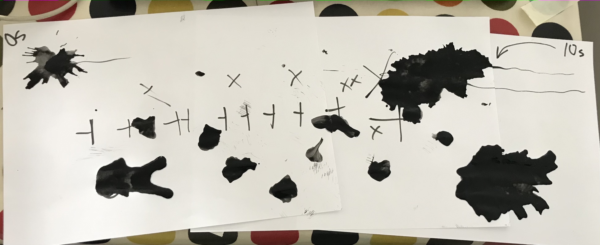
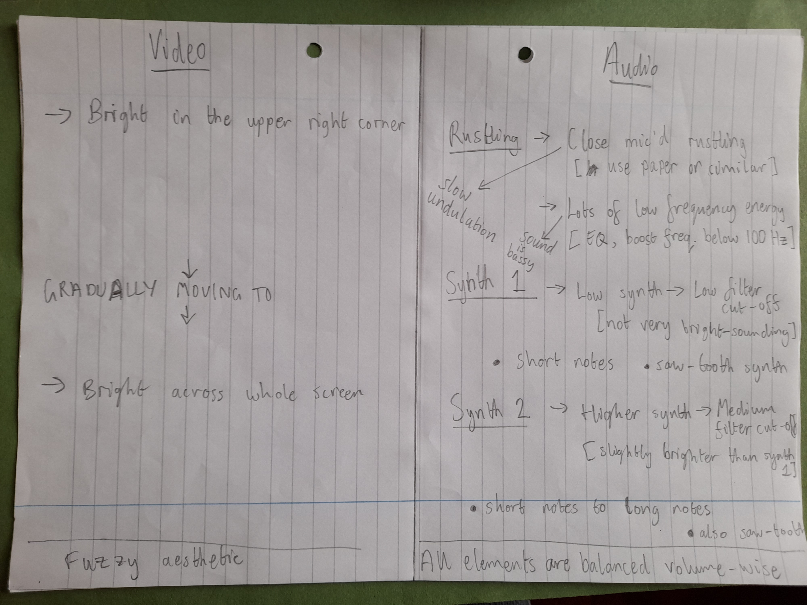
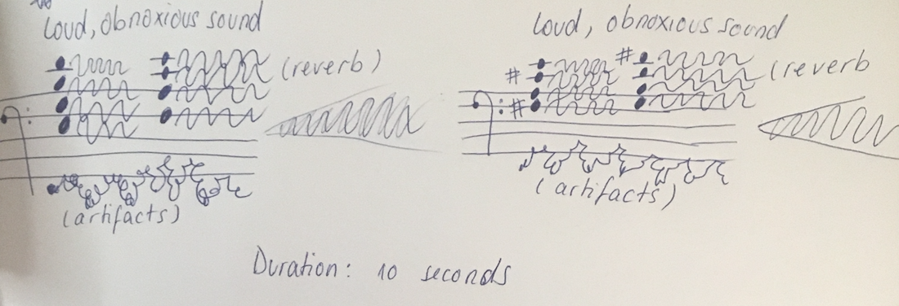
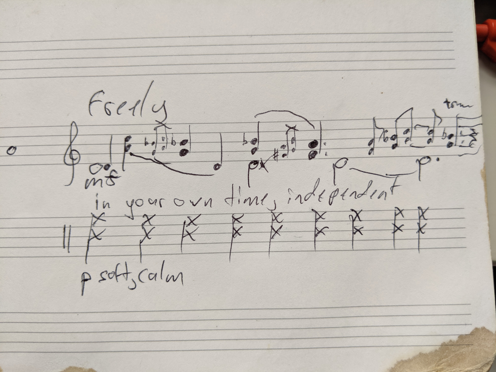

Projects:
lost in translation - score making and interpreting - 27/3/21
What instructions can we give to describe how we might reproduce a sound? And how will those instructions be interpreted?
In this session, we all created short sounds. These were passed onto another person, who was required to create a score (a score can be a set of instructions or something more abstract) that would describe the original sound. Then the final person in the chain interpreted the score they recieved.
Featuring work by: Ábel M.G.E. Asher Fynn mistakeless Mara Prună and Patrick Phillip
Here's a sound, created by Ábel:
And here's how Asher described that sound:
Finally, here's mistakeless' interpretation of Asher's score:
What elements of the original sound could you hear in mistakeless' interpretation?
Here are all of the other examples!
Sound and video by Asher:
mistakeless' score for Asher's video:
And finally Mara's interpretation of mistakeless' score:
Now, a sound by Mara:
Patrick's instructions:
Grab a sheet of paper and pencil. Grab a phone and hit record. Write on the paper, but not too aggressively. The recording device must be very close to the writing source to pick up sound. Try to include ambient room noise, possibly by opening the window?
And Ábel's interpretation of these instructions: (skip to 32s for pencil sounds)
For reference, here's the what Ábel's scribbling looked like:

It's pretty fun to try and match the sounds with the gestures in the image.
A sound by mistakeless:
Mara's score:
And Patrick's sonic interpretation:
Last one
Patrick's sound:
Ábel's score:
Asher's score interpretation: (this is a cool transformation)
That's all of them! This was really fun to try out. Thanks to Mike, who originally devised this creative exercise for undergraduate Electronic Music students at Guildhall.
multiplayer drum sequencer - improvisation - 5/9/21
An improvisation created with the Intersymmetric online multiplayer drum sequencer. The improvisation is free to download!
Sample the recording if you like! It's released under the Attribution-ShareAlike 3.0 license.
Featuring: Chris Pott Patrick Phillip mistakeless